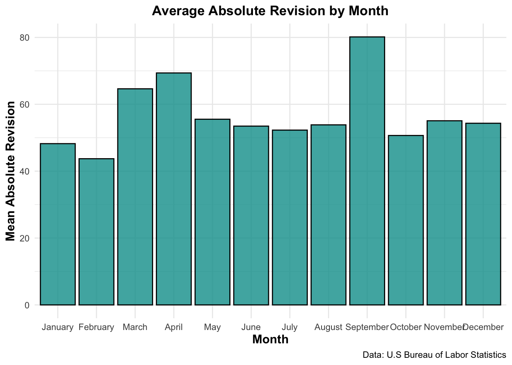
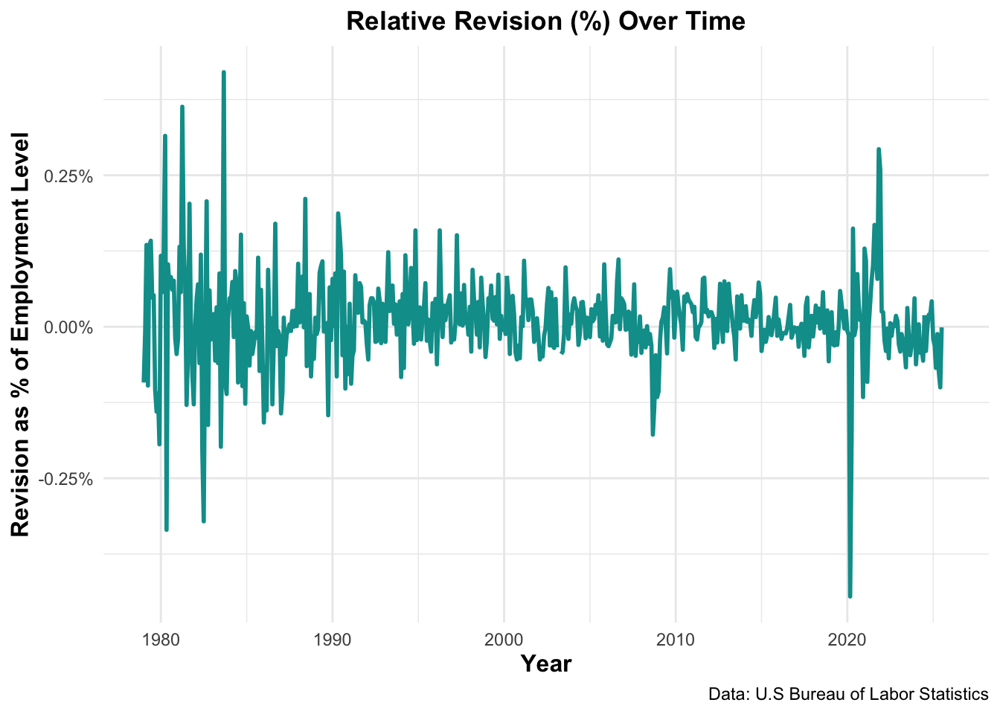
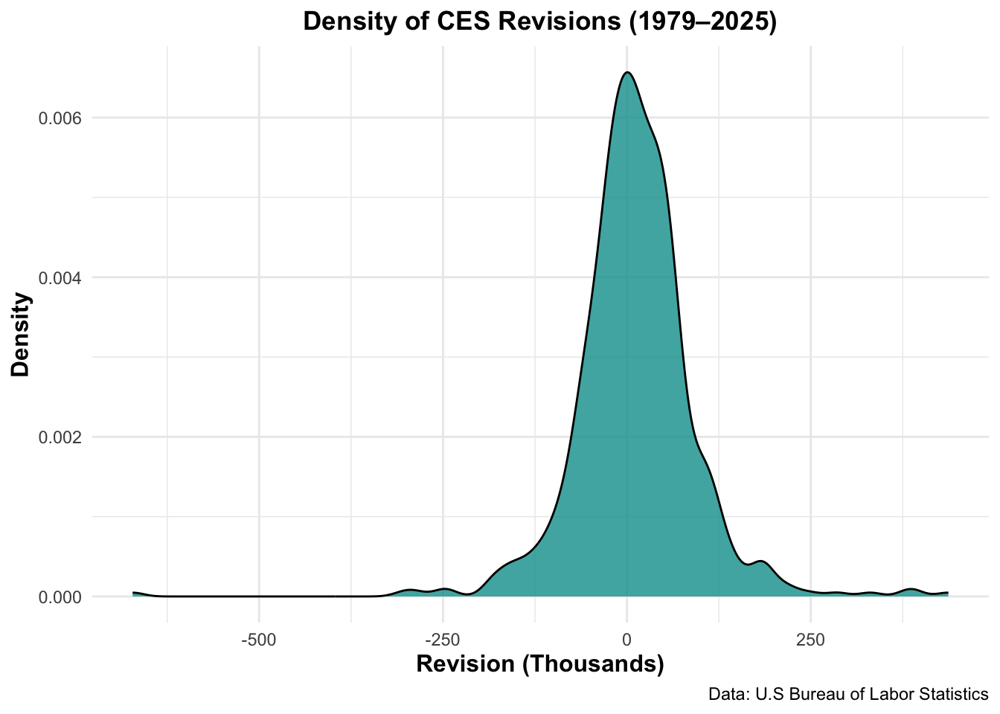
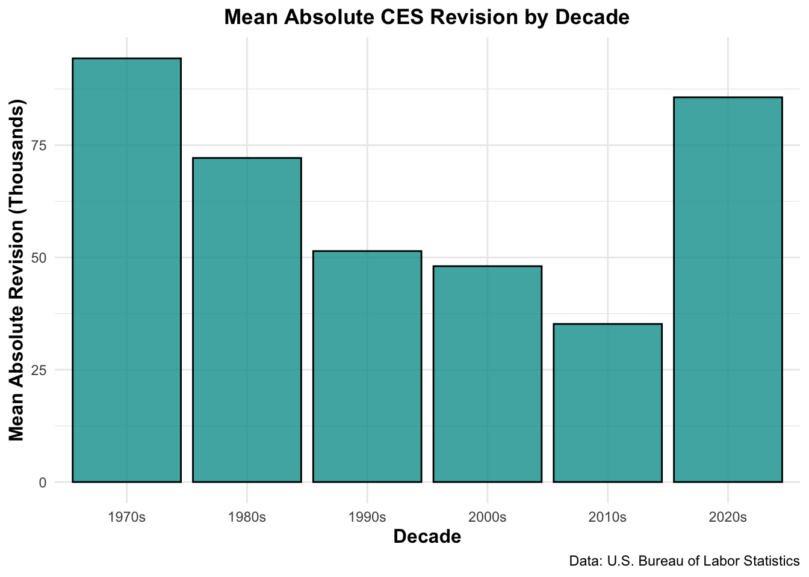
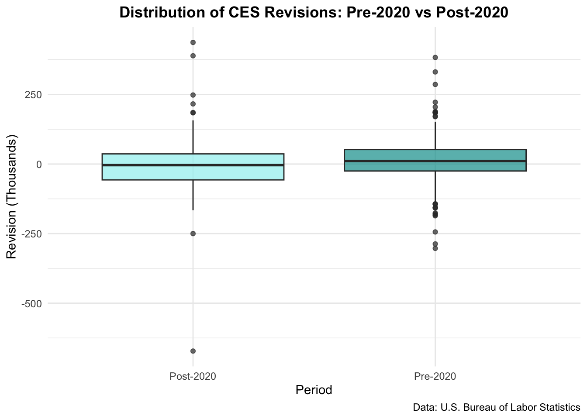

The Bureau of Labor Statistics’ Monthly Current Employment Statistics (CES) report shows the evolution of employment in the United States. The monthly jobs report moves financial markets and is widely analyzed by economists, investors, business leaders, and many others. This project investigates how the BLS CES employment estimates and how their revisions have evolved over time.
Data Acquisition
The first step is to obtain the necessary data. This analysis relies on two data sources: the (final) CES estimates of the total employment level of the United States and the cycle-to-cycle revisions of the CES estimate. We begin by collecting the first dataset: the CES estimates of the total employment level in the United States. For this project, we use only the seasonally adjusted total nonfarm payroll series.
Once the CES estimates are prepared, the next step is to obtain the second dataset: the cycle-to-cycle revisions of the CES estimates.
Show the code
url_ces_revision <-"https://www.bls.gov/web/empsit/cesnaicsrev.htm#1979"request_ces_revision <-request(url_ces_revision) |>req_user_agent("Mozilla/5.0 (Macintosh; Intel Mac OS X 10.15; rv:143.0) Gecko/20100101 Firefox/143.0") |>req_perform()raw_data_ces_revision <- request_ces_revision |>resp_body_html()get_table_ces_revision <-function(data, year) { id <-paste0("#", year)tibble(year = data |>html_elements(paste0(id, " td:nth-child(2)")) |>html_text() |>head(12),month = data |>html_elements(paste0(id, " .sub0")) |>html_text() |>head(12),original = data |>html_elements(paste0(id, " td:nth-child(3)")) |>html_text() |>head(12),final = data |>html_elements(paste0(id, " td:nth-child(5)")) |>html_text() |>head(12),revision = data |>html_elements(paste0(id, " td:nth-child(8)")) |>html_text() |>head(12)) |>mutate(date =ym(paste(year, month)),across(c(original, final, revision), ~as.numeric(str_replace(.x, ",", "")))) |>select(date, original, final, revision)}years <-1979:2025ces_revision_table <- purrr::map_dfr(years, ~get_table_ces_revision(raw_data_ces_revision, .x))
Data intregation and Exploration
Now that the data has been obtained, the next step is to join these two datasets and perform exploratory analysis to investigate trends in CES levels and revisions. We will begin by calculating some key statistics, but before starting, it is useful to examine the overall evolution of employment in the United States.
We can observe a positive trend in employment, with only two significant drops: in 2008, due to the financial crisis, and in 2020, as a result of COVID-19. Aside from these declines, we can see a strong upward trend overall.
The first statistic calculates the mean revision in absolute terms by decade. Before analyzing the table, it is important to explain the term revision: this represents the change between the initial estimate and the final reported value for a given month. For example, in the 1980s, the mean revision was 72.15, indicating that, on average, the employment level was adjusted by 72.15 thousand employees from the first estimate to the final value.
From the table, the 1970s are not significant, as the data begins in 1979. Furthermore, the 2020s help show the current level of revisions, but since the decade is not complete, no definitive conclusion can yet be drawn. Overall, the decade with the highest mean revision is the 1980s.
The next statistic calculates the mean revision in absolute terms by year and also computes the mean relative revision. The relative revision represents the average size of the revision as a percentage of the total employment level, showing how much the initial estimate changed relative to the total number of employees. For example, in 2021, a relative revision of 0.12% means that, on average, the initial CES estimate was adjusted by 0.12% of the total employment to reach the final reported value.
The table shows the mean revision (in thousands of employees) and the mean relative revision (as a percentage) for each year.
This table shows when the highest revisions in absolute terms occur by month. It can be observed that September has the highest mean revision, with 80.15 thousand employees.
Additionally, the following visualization makes it easy to identify the months with the largest mean revisions.
Show the code
ggplot(stat_month_h_rev, aes(x =reorder(month_name, month), y = mean_revision)) +geom_col(alpha =0.8,fill ="#009d9a",color ="black") +labs(title ="Average Absolute Revision by Month",x ="Month",y ="Mean Absolute Revision",caption ="Data: U.S Bureau of Labor Statistics" ) +theme_minimal() +theme(plot.title =element_text(face ="bold", hjust =0.5),axis.title =element_text(face ="bold", size =12) )

Show the code
# largest negative and positive revisionlargest_pos_rev <- exploration_table |>filter(!is.na(revision)) |>slice_max(revision, n =1)largest_neg_rev <- exploration_table |>filter(!is.na(revision)) |>slice_min(revision, n =1)
One question that arises is when the largest positive and negative revisions occurred. The largest positive revision was in November2021, with a revision of 437 thousand employees, while the largest negative revision occurred in March2020, with a revision of -672 thousand employees.
The following plot will show the relative revision over time, allowing us to observe how the size of revisions compares to the total employment level throughout the years. This helps identify periods when initial CES estimates were particularly over-estimated or under-estimated relative to the overall employment, providing insights into the accuracy and reliability of the monthly reports.
Show the code
relative_rev_plot <-ggplot(exploration_table, aes(x = date, y = relative_revision)) +geom_line(color ="#009d9a",size =1) +scale_y_continuous(labels =label_percent(scale =1)) +labs(title ="Relative Revision (%) Over Time",x ="Year",y ="Revision as % of Employment Level",caption ="Data: U.S Bureau of Labor Statistics" ) +theme_minimal() +theme(plot.title =element_text(face ="bold", hjust =0.5),axis.title =element_text(face ="bold", size =12))relative_rev_plot

As we can observe, over time the percentage of revisions is mainly concentrated between -0.25% and 0.20% of the total employment, showing that these reports are highly accurate. From 1990 to the present, the values remained within this range except during the financial crisis and the COVID-19 pandemic.
Finally, to assess the accuracy of the estimates, a density plot of CES revisions was created for the period from 1979 to 2025. The plot shows the distribution of revision values, highlighting that most revisions are very close to zero, while larger positive or negative revisions are rare and appear as outliers. The peak at zero indicates that most revisions are very small, demonstrating that the initial CES estimates are generally highly accurate, with only occasional large adjustments.
Show the code
ggplot(exploration_table, aes(x = revision)) +geom_density(fill ="#009d9a", alpha =0.8) +labs(title ="Density of CES Revisions (1979–2025)",x ="Revision (Thousands)",y ="Density",caption ="Data: U.S Bureau of Labor Statistics" ) +theme_minimal() +theme(plot.title =element_text(face ="bold", hjust =0.5),axis.title =element_text(face ="bold", size =12) )

Statistical Analysis
Now that we have gained some important insights from the data, we turn to formal statistical inference to extract further information.
We begin with a two-sample test to examine whether the behavior of CES revisions has changed over time. Specifically, we investigate whether negative revisions—months in which the final employment estimate is lower than the initial estimate—have become more or less common in the modern period. If the fraction of negative revisions has increased after 2000, this could indicate declining initial accuracy or reflect changes in data collection, economic volatility, or methodological updates in the CES program.
By comparing the proportion of negative revisions before and after 2000 using a two-sample proportion test, we assess whether revision patterns have remained stable across decades or exhibit a statistically significant shift.
The result is not statistically significant because the p-value is much higher than the common significance threshold of 0.05. This means there is insufficient evidence to conclude that the proportion of negative revisions changed after 2000. Additionally, the 95% confidence interval (-0.045 to 0.127) includes zero, which further indicates that the difference could plausibly be zero. In practical terms, this shows that the rate of negative revisions has remained stable over time, and any observed differences are likely due to random variation rather than a true structural change in the CES estimation process.
In our next test, we investigate whether the accuracy of CES initial estimates has changed in recent years by performing a two-sample t-test. Since 2020 marked the start of the COVID-19 shock and a period of extraordinary labor-market volatility, larger revisions might be expected if early estimates became less reliable. The goal of this test is to compare the mean revision before and after 2020, allowing us to determine whether any differences observed in the exploratory analysis reflect a genuine structural shift or are simply the result of random variability.
The results of the two-sample t-test indicate that there is no statistically significant difference in the mean CES revision before and after 2020. The p-value is well above the conventional 0.05 threshold, and the confidence interval includes zero, indicating that any observed difference in mean revision could plausibly be due to random variation. In practical terms, this suggests that the accuracy of CES initial estimates has remained stable in the post-2020 period, even during the extraordinary labor-market volatility caused by the COVID-19 pandemic.
Fact check BLS Revisions
In this section, we will assess whether certain claims made about CES revisions are plausible or, instead, unsupported by the data. To do this, we will examine two specific statements.
1. Statement
“Jobs reports have always required revisions, but the initial numbers continue to get less and less accurate.”
We assess whether the claim that initial CES estimates have become less accurate over time holds by examining the magnitude and frequency of revisions across decades, and by comparing pre-2000 to post-2000 periods.
Supporting evidence
First, we look at mean absolute revisions by decade. If initial estimates were becoming less accurate, we would expect these values to increase systematically over time. However, the data shows no such trend.
Show the code
stat_decade_table
Show the code
stat_decade |>ggplot(aes(x = decade, y = mean_revision)) +geom_col(alpha =0.8,fill ="#009d9a",color ="black") +labs(title ="Mean Absolute CES Revision by Decade",x ="Decade",y ="Mean Absolute Revision (Thousands)",caption ="Data: U.S. Bureau of Labor Statistics" ) +theme_minimal()+theme(plot.title =element_text(face ="bold", hjust =0.5),axis.title =element_text(face ="bold", size =12) )

It is true that the value for the 2020s appears higher, but this decade is still ongoing and includes exceptional disruptions such as the COVID-19 pandemic. For this reason, we cannot draw firm conclusions based on this decade alone. Instead, we continue examining the yearly data and additional evidence to properly assess this claim.
Next, we examine the average annual revisions. Although specific years show fluctuations, overall there is no indication of a sustained increase in the magnitude of revisions, suggesting that the annual accuracy of the CES has remained relatively stable. However, when focusing on the most recent years, a slight upward trend emerges beginning in 2022. It will therefore be important to assess whether 2025 continues this pattern and how revisions evolve in early 2026.
The next analysis helps us confirm that the accuracy of CES revisions has remained relatively stable. In this case, we examine the direction of revisions. If revisions had become increasingly biased, either more frequently positive or more frequently negative, it would suggest a deterioration in accuracy over time.
The fraction of negative revisions is nearly unchanged, 40.5% before 2000 compared to 44.6% after 2000, suggesting no meaningful shift in bias. This suggests that initial CES estimates have not become less accurate over time.
The following chart illustrates that, in general, CES revision accuracy has remained relatively stable over time, while highlighting notable deviations during extraordinary events such as the COVID-19 pandemic or the 2008 financial crisis.
Show the code
relative_rev_plot
Finally, the proportion test comparing negative revisions before and after 2000, conducted in the statistical analysis section, showed no statistically significant difference between the two periods. This reinforces the evidence that the accuracy of initial CES estimates has remained stable over time.
Show the code
proportion_test_result
Conclusion
Overall, the analysis shows that the accuracy of CES estimates has remained relatively stable over time. While a slight upward trend in revisions can be observed since 2022, the values remain within the historical range of typical revisions. Only the upcoming months will confirm whether this represents a sustained increase or a temporary fluctuation. Historical CES revisions do not provide evidence of worsening accuracy over time.
PolitiFact Rating: Mostly False.
2. Statement
“The data has become very unreliable with these massive revisions over the last few years.”
In this case, we evaluate the claim that CES data has become very unreliable with massive revisions over the last few years. We do this by analyzing both the magnitude and direction of revisions in recent years, with particular focus on the post-2020 period compared to earlier years.
Supporting Evidence
We first examine the mean absolute revisions by year. If revisions were systematically increasing, we would expect larger average revisions in the post-2000 period.
As observed in the previous claim, the mean absolute revision by year has shown a slight upward trend since 2022, with 2023 and 2024 recording the highest revision levels during the post-2000 period, alongside the financial crisis and COVID-19 years. It will be important to see whether 2025 continues this trend once the full-year data is available.
Next, we consider the largest positive and negative revisions, which occurred in November 2021 and March 2020, respectively. Although these peaks happened in recent years, they should not be considered indicative of a general trend, as they occurred during the exceptional circumstances of the COVID-19 pandemic.
We also analyze relative revisions (%), which measure each revision as a percentage of total employment for that month. This provides context for the size of revisions relative to the scale of employment.
Show the code
relative_rev_plot
The relative revision plot shows that recent revisions do not exceed historical levels in a meaningful way.
To further assess whether revisions have become larger in the post-pandemic period, we compare the full distribution of revisions before and after 2020 using a boxplot. If revisions were “getting bigger,” we would expect noticeably higher medians or wider variability in the post-2020 distribution. Instead, the two periods display similar spreads and central tendencies, indicating that the scale of revisions has not systematically increased.
Show the code
exploration_table |>mutate(period =if_else(year <2020, "Pre-2020", "Post-2020")) |>ggplot(aes(x = period, y = revision, fill = period)) +geom_boxplot(alpha =0.7) +scale_fill_manual(values =c("Pre-2020"="#009d9a", "Post-2020"="#9ef0f0")) +labs(title ="Distribution of CES Revisions: Pre-2020 vs Post-2020",x ="Period",y ="Revision (Thousands)",caption ="Data: U.S. Bureau of Labor Statistics" ) +theme_minimal() +theme(plot.title =element_text(face ="bold", hjust =0.5),legend.position ="none")

Finally, a t-test comparing post-2020 revisions to pre-2020 revisions shows no statistically significant difference in mean revisions, suggesting that the size of revisions has not increased considerably.
Show the code
t_test_table
Conclusion
Although revisions have generally stayed within historical levels, a slight increase is observable since 2022 with 2023 and 2024 recording the highest levels during the post-2000 period but, in this case, there is a different situation as there has not been any financial crisis or pandemic such as COVID during these last years, furthermore 2025 could continue this upward trend if it closes with the current numbers.
PolitiFact Rating: Half true.
To Sum Up
Throughout this project, we analyzed CES employment data from 1979 to 2025, calculating key statistics, visualizing trends, and performing hypothesis tests to assess revisions over time. We also used these analyses to fact-check selected claims about CES accuracy. Overall, our work demonstrates how data collection, exploration, visualization, and statistical testing can provide insights into the reliability of official employment statistics.